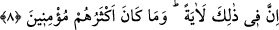
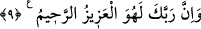

bir çok, bitkiler bitirdik.
Her ne kadar her bitki bir fayda ve hikmeti içerse de burada zararlı bitki türlerinin bir
tarafa bırakılıp faydalı bitkilerin bitirilmesinin özellikle zikredilmesi, özel olarak
Allah’ın kudretine ve nimetine birlikte delâlet ettiği içindir.
Bilesin ki Allah Sübhânehû ve Teâlâ, görünen bu yeryüzünden her sınıf ve türden
güzel ve hoşa giden bitkiler bitirdiği gibi âriflerin kalblerinde de îmân, tevekkül, yakîn,
ihlâs ve güzel ahlak gibi güzel bitkiler bitirir. Nitekim Rasûlullah (s.a.) “Suyun
yeşillikleri bitirdiği gibi Lâ ilâhe illallah da îmanı bitirir/yeşertir.”[4] buyurmuştur.
Ebû Bekr b. Tâhir der ki: “Yeryüzü bitkilerinden en değerli çift, Âdem ile
Havvâ’dır. Çünkü rasûllerin, peygamberlerin, velîlerin ve âriflerin ortaya
çıkarılmalarına onlar sebep olmuşlardır.”
Şa’bî ise şöyle der: “İnsanlar, yeryüzünün bitkilerindendir. Kim cennete girerse, o
kerîmdir/şereflidir. Kim de cehenneme girerse o da bayağıdır.
8. Şüphesiz bunlarda (Allah’ın kudretine) bir nişâne vardır; ama çoğu iman
etmezler.
“Şüphesiz bunlarda” yâni zikredilen bu bitirmede veya bu sınıfların her birinde
onları bitiren Allah’ın kudretinin kemâline, ilminin sonsuzluğuna, geniş rahmetinin
nihâyetsizliğine delâlet eden büyük “bir nişâne vardır.” Bu âyet/nişâne, îman etmeyi
zorunlu kılar ve inkâra mâni olur.
“Ama” zikredilen nişânelere rağmen Hz. Peygamber (s.a.)’in kavminin “çoğu iman
etmezler.” Küfür ve dalâletlerinde ısrar ettikleri, azgınlığa ve cehâlete daldıklarından
dolayı mü’min değildirler.
“
” Sîbeveyh’e göre sıladır. Çünkü ‘Onların çoğu Allah’ın ilminde ve
kazâsında/hükmünde mü’min değillerdir’ mânâsına hamledilirse, onların zâhiren
küfürde mâzur oldukları vehmedilebilir. Allah Teâlâ tarafından îmanı gerektiren
hususların açıklanmış olması buna ters düşer.
Fakîr (Bursevî) der ki: “Biz dilesek, onların üzerine gökten bir mûcize indiririz”
(eş-Şuarâ, 26/4) ve benzeri âyetler, bu ikinci mânâya delâlet eder. Ancak bundan
onların mâzur oldukları sonucu çıkmaz. Çünkü onlar irâdelerini küfür ve masîyet
tarafına çevirmişlerdir. Onlar kendi ihtiyarlarına/tercihlerine göre ilm-i ezelîde mü’min
değildirler.
İmansızlığın onların çoğuna nisbet edilmesi, aralarında îman edenler olacağından
dolayıdır.